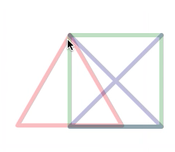
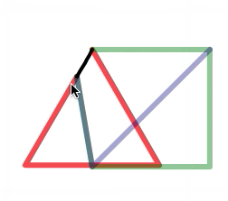
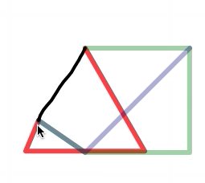
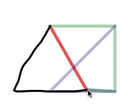
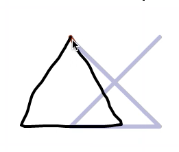
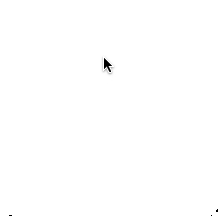

Using the Octopocus feedback
The Octopocus is a feedback representation for gestures that supports the user in visualizing the part of the stroke s/he has already completed and in understanding how s/he can complete it. The original version has been introduced in [1].
The Grid.Octopocus class provides a simplified implementation of this feedback, which visually appears as follows.
    
At the beginning of the stroke, it shows the available gestures, using different colours. At each update, the following information is encoded in the representation:
- The black line represents the part of the stroke the user has performed, similarly to the Grid.LineFeedback.
- The color opacity represents the similarity of the user's stroke with each gesture understood by the interface. In the previous figure, after a few updates the system is pretty sure that the user will end up performing a triangle (in red). The square (in green) in the last representation seems impossible to recognize, while the delete (in blue) has still some chance.
- The colored shapes represent the possible stroke continuations, as foreseen by the recognition algorithm. In the Grid.Octopocus implementation, we simplified this part considering only polyline gestures, so the algorithm should tell only which segment of the polyline the user is currently performing. In the above example the red triangle loses the colored sides when the user correctly draws them with the black line.
For creating the Octopocus feedback you need to instantiate the Grid.Octopocus class
and to invoke the init method for connecting the object with the drawing layer of a
Grid.Scene. The object contains already the description of the gesture guidance
for the triangle, square and delete gestures. It is possible to change the guidance for
supporting other strokes, but how to do it is beyond the scope of this tutorial.
var scene = new Grid.Scene();
scene.init();
var feedback = new Grid.Octopocus();
feedback.init(scene.layer);The following section describe how to control the feedback visualization.
[1] Olivier Bau and Wendy E. Mackay. 2008. OctoPocus: a dynamic guide for learning gesture-based command sets. In Proceedings of UIST '08, ACM, 37-46.
Start Method
The start the guidance underneath the current stroke position. It requires the same
event object passed by the Input.StrokeInput notifications. Its effect is to show
all gesture guidance paths as equally likely. The figure below shows the execution effect.

feedback.start(event)
// It receives the start stroke event from a Input.StrokeInput instance named
// input and it passes it to a Scene.Octopocus instance named feedback.
// The Input.StrokeInput instance enhances the Konva.Event
// descriptor with the d field automatically.
input.onStrokeBegin.add(function (event) {
feedback.start(event);
});Update Method
The update method changes the current state of the visual guidance. It requires the same
event object passed by the Input.StrokeInput notifications and a Grid~FeedforwardState object, which
describes the recognition algorithm interpretation of a partially executed stroke.
Such description is a simple array, having an object entry for each gesture that can be recognized by the application. Each entry contains the following properties:
namethe name of a gesturepartthe index of the segment in the gesture definition polyline that the user is currently executing (as estimated by the recognition algorithm). The segments in the polyline definition are ordered by design: in our triangle sample the user must start from the left side, otherwise the system should not recognize the gesture.probabilitythe confidence of the recognition algorithm in the estimation
The figures below show some sample updates.
1) 2) 3)
// figure 1)
var upd1 = [
{name: "triangle", part: 0, probability: 0.8334},
{name: "square", part: 0, probability: 0.651},
{name: "delete", part: 1, probability: 0.5203}
];
feedback.update(event, upd1);
// figure 2)
var upd2 = [
{name: "triangle", part: 1, probability: 0.8229},
{name: "square", part: 2, probability: 0.4448},
{name: "delete", part: 1, probability: 0.4497}
];
feedback.update(event, upd2);
// figure 3)
var upd3 = [
{name: "triangle", part: 2, probability: 0.8229},
{name: "square", part: 2, probability: 0.022},
{name: "delete", part: 1, probability: 0.33}
];
feedback.update(event, upd3);Clear method
The clear method simply hides the visual feedback and resets it to its initial state.
feedback.clear();Combining StrokeInput and Octopocus
The schema for composing a Input.StrokeInput and a Grid.Octopocus instance is simple:
- The
onStrokeBeginevent notification corresponds to thestartmethod - The
onStrokeChangeevent notification corresponds to theupdatemethod - The
onStrokeEndevent notification corresponds to theclearmethod
var input = new Input.StrokeInput(scene.layer);
input.onStrokeBegin.add(function (event) {
feedback.start(event);
});
input.onStrokeChange.add(function (event) {
var descr = ... // populate it through the recognition algorithm
feedback.update(event, descr);
});
input.onStrokeEnd.add(function (event) {
feedback.clear();
});